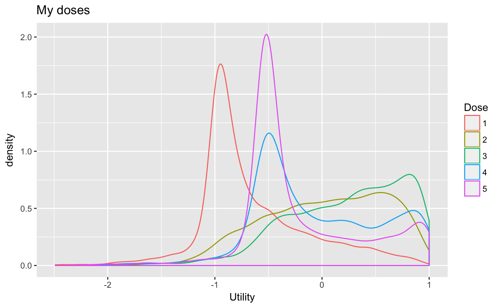
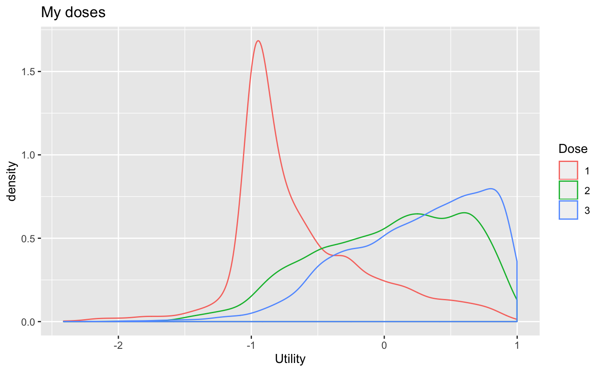

R/efftox_utility_density_plot.R
efftox_utility_density_plot.RdPlot densities of EffTox dose utilities. Optionally plot only a
subset of the doses by specifying the doses parameter. This function
requires ggplot2 be installed.
efftox_utility_density_plot(fit, doses = NULL)
| fit | An instance of |
|---|---|
| doses | optional, vector of integer dose-levels to plot. E.g. to plot
only dose-levels 1, 2 & 3 (and suppress the plotting of any other doses), use
|
an instance of ggplot. Omit assignment to just view the plot.
This function requires that ggplot2 be installed.
#> #> SAMPLING FOR MODEL 'EffTox' NOW (CHAIN 1). #> Chain 1: #> Chain 1: Gradient evaluation took 1.7e-05 seconds #> Chain 1: 1000 transitions using 10 leapfrog steps per transition would take 0.17 seconds. #> Chain 1: Adjust your expectations accordingly! #> Chain 1: #> Chain 1: #> Chain 1: Iteration: 1 / 2000 [ 0%] (Warmup) #> Chain 1: Iteration: 200 / 2000 [ 10%] (Warmup) #> Chain 1: Iteration: 400 / 2000 [ 20%] (Warmup) #> Chain 1: Iteration: 600 / 2000 [ 30%] (Warmup) #> Chain 1: Iteration: 800 / 2000 [ 40%] (Warmup) #> Chain 1: Iteration: 1000 / 2000 [ 50%] (Warmup) #> Chain 1: Iteration: 1001 / 2000 [ 50%] (Sampling) #> Chain 1: Iteration: 1200 / 2000 [ 60%] (Sampling) #> Chain 1: Iteration: 1400 / 2000 [ 70%] (Sampling) #> Chain 1: Iteration: 1600 / 2000 [ 80%] (Sampling) #> Chain 1: Iteration: 1800 / 2000 [ 90%] (Sampling) #> Chain 1: Iteration: 2000 / 2000 [100%] (Sampling) #> Chain 1: #> Chain 1: Elapsed Time: 0.076658 seconds (Warm-up) #> Chain 1: 0.058447 seconds (Sampling) #> Chain 1: 0.135105 seconds (Total) #> Chain 1: #> #> SAMPLING FOR MODEL 'EffTox' NOW (CHAIN 2). #> Chain 2: #> Chain 2: Gradient evaluation took 1.3e-05 seconds #> Chain 2: 1000 transitions using 10 leapfrog steps per transition would take 0.13 seconds. #> Chain 2: Adjust your expectations accordingly! #> Chain 2: #> Chain 2: #> Chain 2: Iteration: 1 / 2000 [ 0%] (Warmup) #> Chain 2: Iteration: 200 / 2000 [ 10%] (Warmup) #> Chain 2: Iteration: 400 / 2000 [ 20%] (Warmup) #> Chain 2: Iteration: 600 / 2000 [ 30%] (Warmup) #> Chain 2: Iteration: 800 / 2000 [ 40%] (Warmup) #> Chain 2: Iteration: 1000 / 2000 [ 50%] (Warmup) #> Chain 2: Iteration: 1001 / 2000 [ 50%] (Sampling) #> Chain 2: Iteration: 1200 / 2000 [ 60%] (Sampling) #> Chain 2: Iteration: 1400 / 2000 [ 70%] (Sampling) #> Chain 2: Iteration: 1600 / 2000 [ 80%] (Sampling) #> Chain 2: Iteration: 1800 / 2000 [ 90%] (Sampling) #> Chain 2: Iteration: 2000 / 2000 [100%] (Sampling) #> Chain 2: #> Chain 2: Elapsed Time: 0.082084 seconds (Warm-up) #> Chain 2: 0.057883 seconds (Sampling) #> Chain 2: 0.139967 seconds (Total) #> Chain 2: #> #> SAMPLING FOR MODEL 'EffTox' NOW (CHAIN 3). #> Chain 3: #> Chain 3: Gradient evaluation took 1.1e-05 seconds #> Chain 3: 1000 transitions using 10 leapfrog steps per transition would take 0.11 seconds. #> Chain 3: Adjust your expectations accordingly! #> Chain 3: #> Chain 3: #> Chain 3: Iteration: 1 / 2000 [ 0%] (Warmup) #> Chain 3: Iteration: 200 / 2000 [ 10%] (Warmup) #> Chain 3: Iteration: 400 / 2000 [ 20%] (Warmup) #> Chain 3: Iteration: 600 / 2000 [ 30%] (Warmup) #> Chain 3: Iteration: 800 / 2000 [ 40%] (Warmup) #> Chain 3: Iteration: 1000 / 2000 [ 50%] (Warmup) #> Chain 3: Iteration: 1001 / 2000 [ 50%] (Sampling) #> Chain 3: Iteration: 1200 / 2000 [ 60%] (Sampling) #> Chain 3: Iteration: 1400 / 2000 [ 70%] (Sampling) #> Chain 3: Iteration: 1600 / 2000 [ 80%] (Sampling) #> Chain 3: Iteration: 1800 / 2000 [ 90%] (Sampling) #> Chain 3: Iteration: 2000 / 2000 [100%] (Sampling) #> Chain 3: #> Chain 3: Elapsed Time: 0.080018 seconds (Warm-up) #> Chain 3: 0.058093 seconds (Sampling) #> Chain 3: 0.138111 seconds (Total) #> Chain 3: #> #> SAMPLING FOR MODEL 'EffTox' NOW (CHAIN 4). #> Chain 4: #> Chain 4: Gradient evaluation took 1.4e-05 seconds #> Chain 4: 1000 transitions using 10 leapfrog steps per transition would take 0.14 seconds. #> Chain 4: Adjust your expectations accordingly! #> Chain 4: #> Chain 4: #> Chain 4: Iteration: 1 / 2000 [ 0%] (Warmup) #> Chain 4: Iteration: 200 / 2000 [ 10%] (Warmup) #> Chain 4: Iteration: 400 / 2000 [ 20%] (Warmup) #> Chain 4: Iteration: 600 / 2000 [ 30%] (Warmup) #> Chain 4: Iteration: 800 / 2000 [ 40%] (Warmup) #> Chain 4: Iteration: 1000 / 2000 [ 50%] (Warmup) #> Chain 4: Iteration: 1001 / 2000 [ 50%] (Sampling) #> Chain 4: Iteration: 1200 / 2000 [ 60%] (Sampling) #> Chain 4: Iteration: 1400 / 2000 [ 70%] (Sampling) #> Chain 4: Iteration: 1600 / 2000 [ 80%] (Sampling) #> Chain 4: Iteration: 1800 / 2000 [ 90%] (Sampling) #> Chain 4: Iteration: 2000 / 2000 [100%] (Sampling) #> Chain 4: #> Chain 4: Elapsed Time: 0.07881 seconds (Warm-up) #> Chain 4: 0.056498 seconds (Sampling) #> Chain 4: 0.135308 seconds (Total) #> Chain 4:# Specify subset of doses to make plot less cluttered efftox_utility_density_plot(fit, doses = 1:3) + ggplot2::ggtitle('My doses')